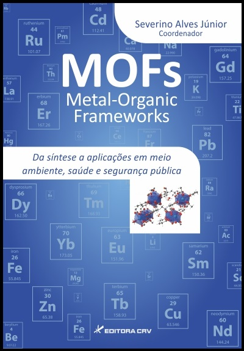

Livros
Livros

MOFs Metal-Organic Frameworks - Da síntese a aplicações em meio ambiente, saúde e segurança públicaCoordenador: Severino Alves Júnior
Coordenador: Severino Alves JúniorEditora: Editora CRV. ISBN: 978-85-444-0672-4. DOI: 10.24824/978854440672.4. Ano de edição: 2016. Número de páginas: 364. Formato do livro: 16x23 cm. Número da edição: 1.
Dissertações
Dissertações